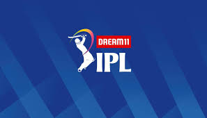

Dream 11 IPL 2020
The 2020 Indian Premier League, also known as IPL 13 is scheduled to be the thirteenth season of the IPL, a professional Twenty20 cricket (T20) league established by the Board of Control for Cricket in India (BCCI) in 2007.
The tournament was originally scheduled to commence on 29 March 2020, but was suspended until 15 April due to the global coronavirus pandemic. After Indian Prime Minister Narendra Modi announced on 14 April that the lockdown in India would last until at least 3 May 2020, the BCCI suspended the tournament indefinitely. On 2 August 2020, it was announced that the tournament would be played between 19 September and 10 November 2020 in the United Arab Emirates.[1][2][3] On 10 August 2020, the Indian government gave its permission for the tournament to take place in the UAE.[4] The full fixtures for the tournament were confirmed on 6 September 2020.